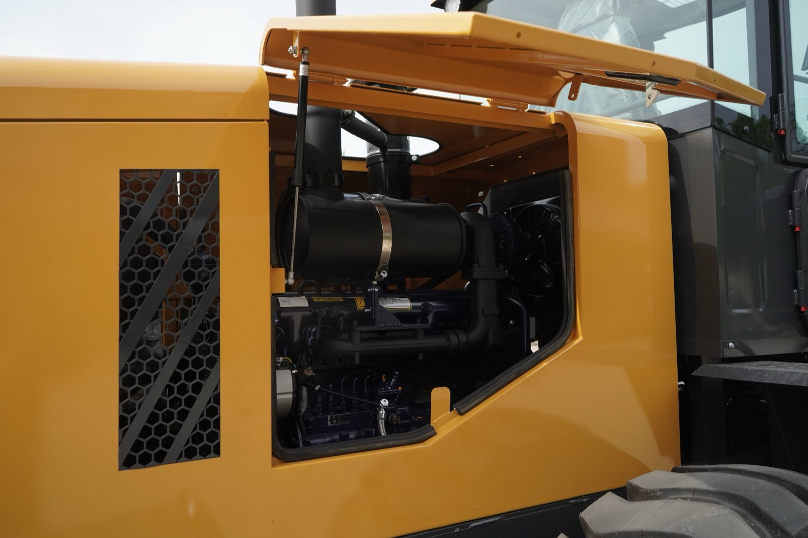
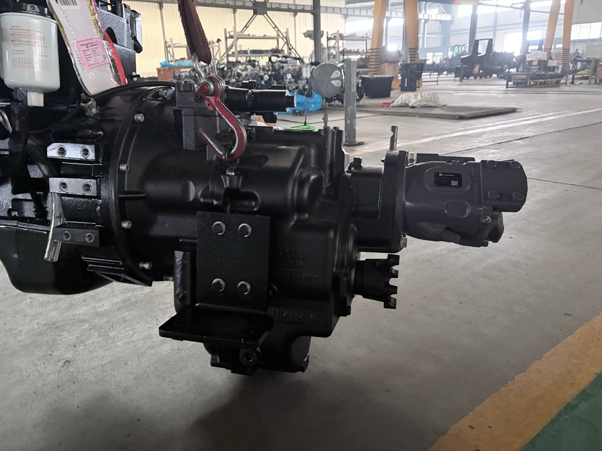
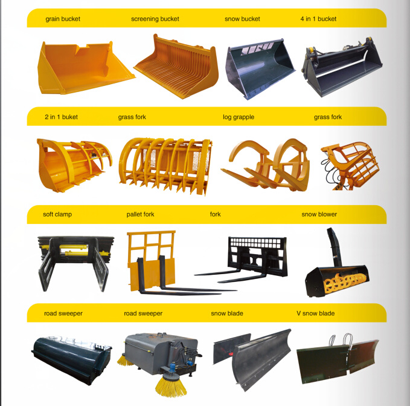

A machine off the line with the panel open. Everything you can see here is standard equipment — and how the machine is configured around it is what this article is about. None of it becomes "better" or "worse" until you say where the machine is going.
There Is No "Best" Configuration — Only a Matched One
When buyers send me an inquiry, the configuration is usually already framed as a ladder. Standard at the bottom, some mid-tier, then the expensive top. Under that framing, choosing standard feels like settling.
That framing is wrong, and it costs people money in both directions.
On the floor, a configuration is not a ladder. It is three separate decisions, and each one is answered by a fact about your business — not by your budget and not by your ambition:
- The engine is answered by where the machine will be registered and work, because non-road emission rules are set by country. This is not a preference. It is a compliance fact, and the right engine is whichever one your market accepts.
- The axle is answered by the ground the machine will work on and how hard it will be worked. Dry and clean, or dusty, sandy, wet and abrasive. Moderate hours, or a production schedule.
- The attachment interface is answered by how many different jobs you will ask one machine to do. One bucket, or three attachments in weekly rotation.
Notice that none of those three questions is "how much do you want to spend." That is the whole point. Configuration is matching, and a matched machine is the one that keeps earning. Let me go through the three in the order I actually make them.
The Engine Follows Your Country's Emission Rules
I always ask where the machine is going before I ask anything about the engine, because in most cases the destination has already decided it.
Non-road engines are regulated in tiers, and the tiers move at different speeds in different parts of the world. You will see names like Stage IIIA, Stage IV and Stage V in Europe, Tier 4 Final in the United States, the CEV stages in India, China's own non-road stages, and so on. The same machine model is built in different engine configurations for different destinations. That is normal, it is how every manufacturer operates, and it is not a downgrade — it is the machine being correctly specified for the market it will live in.
What surprises buyers is the next part, and it is why I never treat "higher tier" as automatically better:
A higher emission tier generally means more aftertreatment hardware on the engine — and aftertreatment raises the fuel-quality requirement and the amount of service attention the machine needs. If your market does not require that tier and your fuel supply is not clean and low-sulphur, choosing it is not a free upgrade. It is a machine that will spend more time being maintained and less time working.
So the engine decision is not about which tier is superior. It is about the tier your market actually requires, matched to the fuel and the service environment you actually have. Four things are worth writing down:
| Ask this about the engine | Why it is the whole decision |
|---|---|
| Which emission tier applies in the country this machine will be registered in? | This is a compliance question, not a preference. Your supplier should be able to answer it for your market specifically — and if they cannot, that is a warning sign about the rest of the order. |
| Will the engine come with its emission documentation? | Some markets check at import, others at registration, others not at all. Having the paperwork with the machine costs nothing and saves a great deal of trouble if anyone asks. |
| Is this engine configuration suited to the fuel I can actually buy? | This matters more than horsepower in many of the markets I sell to. High-sulphur diesel and water in the fuel are real conditions, and higher tiers are more sensitive to both. |
| Are filters and common parts for this exact model available where I am? | A common engine in a matched tier is a supportable engine. An exotic one is a machine that waits for parts. |
Answer those four and the engine is settled. Notice that two of the four are about fuel and parts rather than about the engine itself — which tells you something about where the risk actually sits.
The Axle Follows Your Ground Conditions
Most buyers think of the axle as a part. On a backhoe loader it is three jobs in one component:
- It carries the machine. Everything above it — frame, engine, cab, the entire backhoe end — rests on the axle assemblies, and the load swings constantly as the machine digs, lifts and travels.
- It puts power on the ground. Final drive, differential, and the ratio that decides whether the machine pushes into a pile or crawls out of a trench.
- It stops the machine. Braking lives inside the axle on most of these machines — and this is the part that decides your long-term maintenance bill far more than the rest of the axle does.
Because braking lives in the axle, the axle question is really a question about what your ground throws at your brakes. There are two ways to build that, and the difference between them is not quality tier — it is where the machine is going to work:
- Dry or externally mounted brakes. The brake assemblies sit on the outside of the axle. They work well, they are simple, they are cheaper to buy and cheaper to service. On clean, hard, dry ground with moderate hours, this is the correct specification and I will say so even when a more expensive axle is on my own price list.
- Closed wet-drive axle. The brake packs run inside a sealed housing, immersed in an oil bath. Nothing from outside gets in, and the oil carries the heat away from the friction surfaces. This is the specification for ground that produces grit — and this is the single most valuable upgrade for a buyer working in dust, sand or gravel.
The mechanism is worth understanding, because it explains why the failure arrives as a surprise. Airborne dust and sand are abrasive. When abrasive particles reach a dry brake assembly, they mix with whatever oil film is present and behave like grinding paste. Nothing about that announces itself: the machine brakes normally, day after day, while the friction material and the drum or disc wear faster than they should. The owner usually discovers it as a brake that stops adjusting properly or a service bill that arrives years earlier than expected. On a wet axle, the sealed oil bath means the abrasive never reaches the friction surfaces at all — and because the oil is doing the cooling, the brake also survives repeated use better. You pay more at the beginning and recover it in brake life, adjustment intervals and days the machine is not in the workshop.
| Where the machine works | The axle I would specify | Why |
|---|---|---|
| Clean, hard, dry ground — compacted sites, paved or well-drained yards, farm work; light to moderate hours | Standard dry-brake axle | Nothing abrasive is reaching the brakes. The simpler axle is cheaper to buy and cheaper to service, with fewer seals to maintain. This is the matched choice, not a compromise. |
| Airborne dust or sand for most of the working day — quarry, sand pit, desert site, beach work, demolition, unpaved haul roads | Closed wet-drive axle | Abrasive particles destroy dry brake assemblies from the outside in, and the damage is invisible until it is expensive. A sealed, oil-immersed brake pack is the only design that keeps grit out entirely. |
| Mud, slurry, standing water, repeated river or drainage crossings | Closed wet-drive axle | The same logic with water added. Sealed brakes keep water and silt away from the friction surfaces, and the oil bath helps carry away the heat of repeated wet braking. |
| Long hours, high duty cycle, multiple shifts, and operators who value drivetrain refinement | Integrated drivetrain package (Carraro axle and transmission) | When the machine runs hard and long, the matched drivetrain earns its cost in shift quality, drivetrain life and operator output. This is the next section. |
Where I draw the line for myself: I will not sell a wet axle to someone whose ground does not call for it, because they will never recover the premium — and I will argue hard for a wet axle to someone working in dust or grit, because I have seen what it costs when they do not take it. If you want to go deeper on how the brake design inside the axle compares, my wet drive axle article covers it properly.

This is what "a higher tier" looks like as hardware — an axle and transmission assembly matched to each other before either one reaches the chassis. The axle decision is never only an axle decision.
What the Carraro Package Actually Changes
Now the top of that ladder, and I want to be precise about who it is for. Carraro is an Italian drivetrain manufacturer and their axles and transmissions are the reference point in this industry — you will find them under machines from companies far larger than ours. So when you specify a Carraro axle and transmission on a backhoe loader, you are not buying "a better axle." You are buying a different drivetrain architecture, and it is the right architecture for a buyer with long hours, hard conditions and the service capability to look after it.
And here is the part I want every buyer reading this to understand, because it comes up in almost every quote I write:
When you take the Carraro axle and transmission package, three items you were probably considering as separate options arrive with it — the electronically controlled transmission, pilot (joystick) control, and a variable displacement piston pump. You do not need to select them again. They are already in the machine.
That is not a sales sweetener. It is how the system is built, and the next section explains why — because once you understand the logic, you can evaluate any supplier's claim about it, including mine.
Why Those Three Come as a Set
The short version: they are not three options. They are three parts of one system, and the system will not work if you separate them.
Start with the transmission. Carraro supplies the front axle, the rear axle, and the powershift transmission as a matched drivetrain. A powershift transmission shifts under load — no stopping, no clutch pedal — by engaging and releasing hydraulic clutch packs inside the gearbox. Deciding when and how hard to engage those packs is the job of an electronic control unit driving solenoid valves. That is what makes it an electronically controlled transmission, and it is why it comes with a control unit, shift calibration, and a diagnostic interface.
Now the pump. To shift smoothly, that transmission needs a hydraulic supply with pressure that stays stable and responds quickly, because a clutch pack that fills too slowly slips and one that engages too abruptly shocks the driveline. A fixed gear pump cannot do this well — its flow rises and falls with engine speed, and excess oil goes back over a relief valve as heat. A variable displacement piston pump adjusts its own output to what the system is asking for, which is exactly the behaviour an electro-hydraulic transmission needs.
And now pilot control, which is the same capability seen from the operator's seat. Pilot control uses low-pressure oil to move the main valve spools instead of moving them with rods and cables. The lever you touch only opens a small pilot valve, so effort drops, travel shortens, and fine metering becomes possible — the difference you feel when feathering a bucket along a grade. Pilot control needs a clean, pressure-stable oil supply. The system you already have, because of the transmission, is exactly that.
Put simply: the transmission demanded the pump, and the pump made pilot control possible. Order them as one and you get a coherent machine. Order a mechanical-shift gearbox with a gear pump and add pilot control later, and you are building the same capability out of mismatched parts.
If You Do Go Up a Tier, Get It in Writing
"Included" is not the same as "specified." I have watched buyers nod at a good answer and then discover in year two that nobody wrote down what was in the machine. So even when the package is genuinely all-inclusive, I would want these questions answered in writing:
- Which control unit does the transmission use, and is a diagnostic interface included? If the answer is vague, the "electronic control" is a label, not a feature.
- Is the service manual for the transmission and its electronics part of the delivery? This is the difference between your mechanic being able to work on it and being locked out.
- What is the pump type and displacement, and is the circuit load-sensing? A piston pump in a non-load-sensing circuit leaves performance on the table.
- What is the pilot pressure, and is the pilot circuit separately filtered? Contaminated pilot oil is how good joysticks start feeling notchy.
- What filtration rating is required, and are the filter part numbers listed? Hydraulic systems die from contamination long before they die from wear.
- How many shift calibration modes exist, and can they be adjusted for my working conditions? A transmission tuned for road travel and one tuned for trenching are not set up the same way.
Ask these six questions of any supplier — including me — and you will learn something more useful than any brochure: whether the factory actually understands the machine it is selling you.
Four Buyers, Four Different Right Answers
Here is the matching logic in the form I actually use it. Every row below is a real kind of buyer I write quotations for, and in every row you can see both halves of the decision — what I would specify, and what I would leave off the order.
| Buyer profile | What I would specify | What I would leave off |
|---|---|---|
| Farm or small contractor. Clean, hard ground. A few hundred hours a year. | Standard axle, standard transmission, mechanical control, mechanical quick coupler, one bucket plus one spare | The integrated heavy-duty drivetrain. It costs more to buy and its electronic components age sitting still. Put the money into tires that suit your ground. |
| Quarry, sand pit, desert or beach site. Dust or grit in the air all day. | Closed wet-drive axle, sealed electrical connectors, heavy-duty air filtration, and the emission tier your market requires — no higher | Nothing on the axle. This is the buyer the wet axle exists for. But do not buy aftertreatment hardware your market does not ask for and your fuel cannot feed. |
| Rental fleet or multi-service contractor. Four or more attachments on one machine. | Hydraulic quick coupler, third-function circuit, auxiliary circuit plumbed at the factory | A full attachment inventory bought in one order. Start with the attachments that bill, and have the circuits ready for the ones that follow. |
| Production fleet working long hours, or a buyer who wants the top of the drivetrain ladder. | Carraro axle and transmission package — which brings the electronically controlled transmission, pilot control and variable piston pump with it | Nothing on the drivetrain. This is the configuration I would specify for my own machine. Spend your attention on service capability instead. |
I want to be honest about one thing in that table, because it is the exception that proves the point. There is a case where I will steer a buyer away from the top-tier drivetrain even when the hours justify it: if there is no electro-hydraulic service capability within reach. An electronically controlled transmission needs diagnostic equipment and a trained technician. If nobody near you can service it, then a simpler, mechanical drivetrain is the more reliable business decision — not a lesser one. A matched machine is one you can keep running.
Everything else in that table is a match, not a compromise. That is the difference I want you to take from this article: the buyer who skips the top tier because their work does not call for it and the buyer who takes it because their work does are both making good decisions, and I will tell each of them so.
The Coupler: How Many Attachments Are You Actually Going to Run?
Now the attachment end of the machine, and the one decision that should come before all the others: the quick coupler. This is also where I have the most concrete rule from the floor.
If you plan to run three or more attachments in regular rotation, take the hydraulic quick coupler.
The arithmetic is not about the coupler's price. It is about what happens to your attachment set after the machine arrives. With a mechanical coupler, you get out of the cab for every change — pull the pins, swap the attachment, climb back in. That is perfectly reasonable when you change attachments occasionally. But once you are running three attachments, that friction changes behaviour. Operators stop swapping. They start using whichever attachment happens to be on the machine, because reaching for the right one costs them ten minutes and a walk in the mud. You paid for a range of capability and you end up working with one attachment.
That is why the hydraulic coupler is not a comfort option in this configuration. It is what makes the rest of your attachment investment use the capability you bought. Release and lock from the cab, and the second and third attachments actually get used.
The rule has a second half, and it matters just as much:
- One or two attachments, changed occasionally. The mechanical coupler is the better answer. Fewer components, nothing hydraulic to maintain, lower price, less to go wrong. If someone tells you that is settling, they are selling rather than matching.
- Three or more attachments in rotation, or several changes a day. Hydraulic quick coupler, ordered with the machine, because it needs a control in the cab and a clean factory wiring route. Adding it later is a much worse job.
And decide it on your worst working day rather than your average one. In the rainy season, on a site where getting out means sinking to your knees, a cab-operated changeover stops being a convenience and starts being the difference between using your attachments and leaving them in the yard.
One sequence point, because it catches people out: coupler first, attachments second. The coupler sets the interface and the interface decides what fits. Buy your attachments first and pick a coupler afterward, and you will end up with a set of parts that almost work together — and then spend a week cutting, welding and adapting what should have been a five-minute changeover in the yard. That is not maintenance. That is a design mistake paid for at retail.
Attachments You Should Decide Before the Machine Is Built
The timing question is separate from the coupler question, and it is the one that most often goes wrong — not because an attachment was the wrong choice, but because it was the right choice made too late. The dividing line is simple: does this attachment need hydraulics the machine does not already have?
| Decide before the machine is built | Can usually be added later |
|---|---|
| Attachments needing an auxiliary hydraulic circuit — hydraulic breaker, earth auger, hydraulic shear | Buckets, including special profiles, as long as the coupler interface matches |
| Third-function circuit for a 4-in-1 bucket or a grapple — anything that has to open and close | Forks and other purely mechanical attachments |
| Double-acting circuit if the attachment must run in both directions, such as an auger | A second bucket of the same interface family |
| Hydraulic quick coupler — it needs a cab control and a clean wiring route | Wear parts: teeth, cutting edges, hoses, pins and bushings |
Here is the practical difference. Fitting an auxiliary circuit at the factory means a valve section, a protected hose run, and quick couplers installed on the line, where everything is still open and reachable. Doing it afterward means opening the main valve on a finished machine, routing and protecting hoses through a machine that is already assembled, and in many cases affecting warranty coverage on the hydraulic system you just modified.
So when you send your inquiry, do not ask "what attachments do you have?" That question gets you a catalogue. Ask instead: "If I plan to run a hydraulic breaker and an earth auger, how would you configure this machine's hydraulic circuits?" The second question gets you an engineer's answer, and it tells you whether the factory is thinking about your working life or just its price list. You can see the range of attachments we build circuits for on the attachments page.

Part of the range we build machines for. The list length is not the point — the point is that buckets change nothing on the machine, while anything hydraulic changes the order. Sort your list by that line before you send it.
From My Side of the Table: What I Check, and What to Write Down
Before a configured machine leaves, I walk the final inspection with the workshop. On a machine with a matched drivetrain and added circuits, the things I look at are specific:
- Hydraulic cleanliness and leak check after the circuits are fitted — including every newly installed joint, because new plumbing is where contamination enters.
- Shift quality through the full range, under load — not just a static test in the yard.
- Pilot lever feel and centring on every function, because a lever that does not return cleanly is a safety issue before it is a comfort issue.
- Coupler engagement and lock indication — verified with an attachment fitted, not empty.
- The engine's emission documentation against the market it is going to.
- The configuration sheet against the actual machine, item by item, because paperwork drift is real and it always surfaces after shipment.
And the list I would ask you to write into your own inquiry, so nothing depends on memory or goodwill:
- Engine — the emission tier required in my market, and the brand and model confirmed in writing.
- Axle — standard dry-brake or closed wet-drive, chosen against my working conditions, with the reasoning stated.
- If an integrated drivetrain: brand and model, and whether the electronic control, pilot control and piston pump are included — stated explicitly.
- Transmission control unit and diagnostic interface — named, with service documentation confirmed.
- Pump type, displacement, and whether the circuit is load-sensing.
- Coupler type — mechanical or hydraulic — decided against the number of attachments I will actually run, and the interface standard confirmed for future attachments.
- Every hydraulic circuit I will need in the first two years, not just the ones I need today.
- Filtration rating and filter part numbers.
- What is on the machine when it is inspected, and who signs off before shipment. The inspection checklist on this site is the list I would use.
If you want to go deeper on how the hydraulic side works before you have this conversation, my hydraulic system guide walks through pump types, open and closed centre circuits, and why oil cleanliness decides system life. Read that first and the questions above will make immediate sense.
Vivian's Bottom Line
Configuration is not a ladder and it is not a budget decision. It is a matching exercise, and it has three questions: where will this machine be registered, what ground will it work on, and how many different jobs will I ask it to do. Answer those honestly and the configuration writes itself — including the parts you should leave off.
So: the engine follows your country's emission rules and the fuel you can actually buy. The axle follows your ground — a standard dry-brake axle on clean hard ground is the matched choice, and a closed wet-drive axle is close to essential where dust, sand, gravel or slurry will be thrown at the brakes all day. The Carraro package sits at the top of the drivetrain ladder for buyers with long hours and the service capability to support it, and the electronically controlled transmission, pilot control and variable piston pump come with it because physically they belong together. And at the front end, if you are going to run three or more attachments, take the hydraulic quick coupler — that one decision is what makes the rest of your attachment spend worth having.
I stand in this factory every day, so I see what a configuration costs to build in and what it costs to add later, and I see which choices come back as problems. Tell me where the machine is going, what ground it will work on, and what you will ask it to lift, dig and break — and I will tell you plainly which options earn their cost for your conditions and which ones I would leave off, even the ones that would make your invoice larger. That is the version of this conversation I would rather have.
Not Sure Which Way to Spec It?
Send me the country the machine is going to, the ground it will work on, and the attachments you plan to run. I will come back with a written configuration — emission tier, axle type, drivetrain, circuits and coupler — and tell you honestly which options earn their cost for your conditions. No pressure, just a factory-floor read on your spec.
Request a Configured Quote